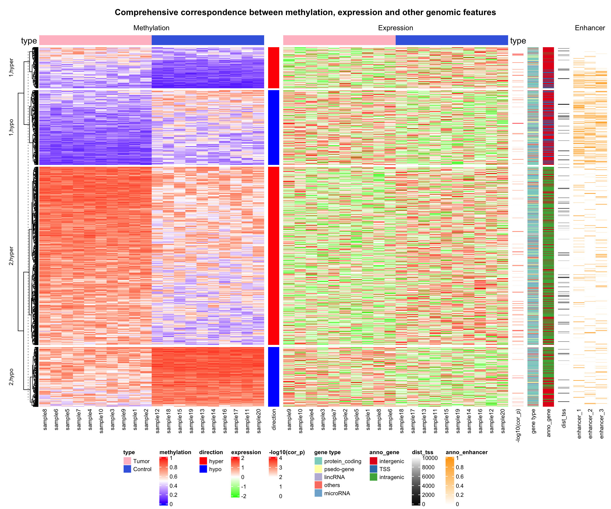
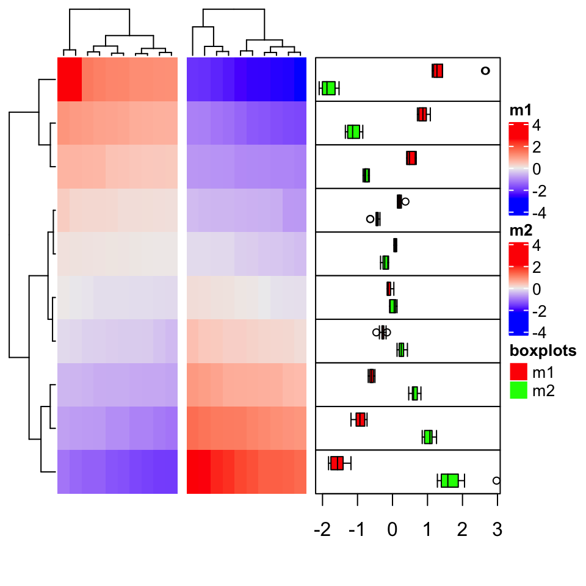

Chapter 9 More Examples
9.1 Add more information for gene expression matrix
Heatmaps are very popular to visualize gene expression matrix. Rows in the matrix correspond to genes and more information on these genes can be attached after the expression heatmap.
In following example, the big heatmap visualizes relative expression for genes (expression for each gene is scaled). On the right we put the absolute expression level of genes as a single-column heatmap. The gene length and gene type (i.e. protein coding or lincRNA) are also put as heatmap annotations or heatmaps.
On the very left of the heatmaps, there are colored rectangles drawn by
anno_block() to identify the five clusters from k-means clustering. On top
of the “base mean” and “gene type” heatmaps, there are summary plots (barplots
and boxplots) showing the statistics or distributions of the data points in
the five clusters.
library(ComplexHeatmap)
library(circlize)
expr = readRDS(system.file(package = "ComplexHeatmap", "extdata", "gene_expression.rds"))
mat = as.matrix(expr[, grep("cell", colnames(expr))])
base_mean = rowMeans(mat)
mat_scaled = t(apply(mat, 1, scale))
type = gsub("s\\d+_", "", colnames(mat))
ha = HeatmapAnnotation(type = type, annotation_name_side = "left")
ht_list = Heatmap(mat_scaled, name = "expression", row_km = 5,
col = colorRamp2(c(-2, 0, 2), c("green", "white", "red")),
top_annotation = ha,
show_column_names = FALSE, row_title = NULL, show_row_dend = FALSE) +
Heatmap(base_mean, name = "base mean",
top_annotation = HeatmapAnnotation(summary = anno_summary(gp = gpar(fill = 2:6),
height = unit(2, "cm"))),
width = unit(15, "mm")) +
rowAnnotation(length = anno_points(expr$length, pch = 16, size = unit(1, "mm"),
axis_param = list(at = c(0, 2e5, 4e5, 6e5),
labels = c("0kb", "200kb", "400kb", "600kb")),
width = unit(2, "cm"))) +
Heatmap(expr$type, name = "gene type",
top_annotation = HeatmapAnnotation(summary = anno_summary(height = unit(2, "cm"))),
width = unit(15, "mm"))
ht_list = rowAnnotation(block = anno_block(gp = gpar(fill = 2:6, col = NA)),
width = unit(2, "mm")) + ht_list
draw(ht_list, ht_gap = unit(5, "mm"))
9.2 The measles vaccine heatmap
Following code reproduces the heatmap introduced here and here.
mat = readRDS(system.file("extdata", "measles.rds", package = "ComplexHeatmap"))
ha1 = HeatmapAnnotation(
dist1 = anno_barplot(
colSums(mat),
bar_width = 1,
gp = gpar(col = "white", fill = "#FFE200"),
border = FALSE,
axis_param = list(at = c(0, 2e5, 4e5, 6e5, 8e5),
labels = c("0", "200k", "400k", "600k", "800k")),
height = unit(2, "cm")
), show_annotation_name = FALSE)
ha2 = rowAnnotation(
dist2 = anno_barplot(
rowSums(mat),
bar_width = 1,
gp = gpar(col = "white", fill = "#FFE200"),
border = FALSE,
axis_param = list(at = c(0, 5e5, 1e6, 1.5e6),
labels = c("0", "500k", "1m", "1.5m")),
width = unit(2, "cm")
), show_annotation_name = FALSE)
year_text = as.numeric(colnames(mat))
year_text[year_text %% 10 != 0] = ""
ha_column = HeatmapAnnotation(
year = anno_text(year_text, rot = 0, location = unit(1, "npc"), just = "top")
)
col_fun = colorRamp2(c(0, 800, 1000, 127000), c("white", "cornflowerblue", "yellow", "red"))
ht_list = Heatmap(mat, name = "cases", col = col_fun,
cluster_columns = FALSE, show_row_dend = FALSE, rect_gp = gpar(col= "white"),
show_column_names = FALSE,
row_names_side = "left", row_names_gp = gpar(fontsize = 8),
column_title = 'Measles cases in US states 1930-2001\nVaccine introduced 1961',
top_annotation = ha1, bottom_annotation = ha_column,
heatmap_legend_param = list(at = c(0, 5e4, 1e5, 1.5e5),
labels = c("0", "50k", "100k", "150k"))) + ha2
draw(ht_list, ht_gap = unit(3, "mm"))
decorate_heatmap_body("cases", {
i = which(colnames(mat) == "1961")
x = i/ncol(mat)
grid.lines(c(x, x), c(0, 1), gp = gpar(lwd = 2, lty = 2))
grid.text("Vaccine introduced", x, unit(1, "npc") + unit(5, "mm"))
})
9.3 Visualize Cell Heterogeneity from Single Cell RNASeq
In this example, single cell RNA-Seq data for mouse T-cells is visualized to show the heterogeneity
of cells. The data (mouse_scRNAseq_corrected.txt) is from Buettner et al.,
2015, supplementary data 1, sheet
“Cell-cycle corrected gene expr”. You can get mouse_scRNAseq_corrected.txt here.
In following code, duplicated genes are removed.
expr = read.table("data/mouse_scRNAseq_corrected.txt", sep = "\t", header = TRUE)
expr = expr[!duplicated(expr[[1]]), ]
rownames(expr) = expr[[1]]
expr = expr[-1]
expr = as.matrix(expr)Genes that are not expressed in more than half of the cells are filtered out.
The get_correlated_variable_rows() function is defined here. It extracts signature genes that are
variably expressed between cells and correlate to other genes.
get_correlated_variable_genes = function(mat, n = nrow(mat), cor_cutoff = 0, n_cutoff = 0) {
ind = order(apply(mat, 1, function(x) {
q = quantile(x, c(0.1, 0.9))
x = x[x < q[1] & x > q[2]]
var(x)/mean(x)
}), decreasing = TRUE)[1:n]
mat2 = mat[ind, , drop = FALSE]
dt = cor(t(mat2), method = "spearman")
diag(dt) = 0
dt[abs(dt) < cor_cutoff] = 0
dt[dt < 0] = -1
dt[dt > 0] = 1
i = colSums(abs(dt)) > n_cutoff
mat3 = mat2[i, ,drop = FALSE]
return(mat3)
}Signature genes are defined as a list of genes where each gene correlates to more than 20 genes with an absolute correlation larger than 0.5.
mat2 contains expression values scaled per gene, which means it contains relative expression
across cells for every gene. Since single cell RNASeq data is highly variable and outliers are
frequent, gene expression is only scaled within the 10th and 90th quantiles.
mat = get_correlated_variable_genes(expr, cor_cutoff = 0.5, n_cutoff = 20)
mat2 = t(apply(mat, 1, function(x) {
q10 = quantile(x, 0.1)
q90 = quantile(x, 0.9)
x[x < q10] = q10
x[x > q90] = q90
scale(x)
}))
colnames(mat2) = colnames(mat)Load cell cycle genes and ribonucleoprotein genes. The cell cycle gene list is from Buettner et
al., 2015, supplementary table 1,
sheet “Union of Cyclebase and GO genes”. Ribonucleoprotein genes are from
GO:0030529. Gene list are stored in
mouse_cell_cycle_gene.rds and mouse_ribonucleoprotein.rds. The two files can be found
here and
here.
cc = readRDS("data/mouse_cell_cycle_gene.rds")
ccl = rownames(mat) %in% cc
cc_gene = rownames(mat)[ccl]
rp = readRDS("data/mouse_ribonucleoprotein.rds")
rpl = rownames(mat) %in% rpSince with scaling the expression values per gene the expression level of a gene relative to other genes has been lost, we calculate the base mean as the mean expression of a gene throughout all samples. The base mean can be used to compare expression levels between genes.
Now the following information is available:
- scaled expression,
mat2, - base mean,
base_mean, - whether genes are ribonucleoprotein genes,
rpl, - whether genes are cell cycle genes,
ccl, - symbols for cell cycle genes,
cc_gene,
In the next step, we can put the information together and visualize it as a list of heatmaps. A gene-gene correlation heatmap is added at the end and defined to be the main_heatmap, meaning that the row order of all heatmaps/row annotations are based on the clustering of this correlation matrix.
For cell cycle genes with relatively high expression levels (larger than the 25% quantile of all genes), the gene name is indicated as text labels. In the first heatmap, the column dendrogram is underlaid with two different colours based in the two main groups derived by hierarchical clustering to highlight the two subpopulations.
library(GetoptLong)
ht_list = Heatmap(mat2, col = colorRamp2(c(-1.5, 0, 1.5), c("blue", "white", "red")),
name = "scaled_expr", column_title = qq("relative expression for @{nrow(mat)} genes"),
show_column_names = FALSE, width = unit(8, "cm"),
heatmap_legend_param = list(title = "Scaled expr")) +
Heatmap(base_mean, name = "base_expr", width = unit(5, "mm"),
heatmap_legend_param = list(title = "Base expr")) +
Heatmap(rpl + 0, name = "ribonucleoprotein", col = c("0" = "white", "1" = "purple"),
show_heatmap_legend = FALSE, width = unit(5, "mm")) +
Heatmap(ccl + 0, name = "cell_cycle", col = c("0" = "white", "1" = "red"),
show_heatmap_legend = FALSE, width = unit(5, "mm")) +
rowAnnotation(link = anno_mark(at = which(ccl & base_mean > quantile(base_mean, 0.25)),
labels = rownames(mat)[ccl & base_mean > quantile(base_mean, 0.25)],
labels_gp = gpar(fontsize = 10), padding = unit(1, "mm"))) +
Heatmap(cor(t(mat2)), name = "cor",
col = colorRamp2(c(-1, 0, 1), c("green", "white", "red")),
show_row_names = FALSE, show_column_names = FALSE, row_dend_side = "right",
show_column_dend = FALSE, column_title = "pairwise correlation between genes",
heatmap_legend_param = list(title = "Correlation"))
ht_list = draw(ht_list, main_heatmap = "cor")
decorate_column_dend("scaled_expr", {
tree = column_dend(ht_list)$scaled_expr
ind = cutree(as.hclust(tree), k = 2)[order.dendrogram(tree)]
first_index = function(l) which(l)[1]
last_index = function(l) { x = which(l); x[length(x)] }
x1 = c(first_index(ind == 1), first_index(ind == 2)) - 1
x2 = c(last_index(ind == 1), last_index(ind == 2))
grid.rect(x = x1/length(ind), width = (x2 - x1)/length(ind), just = "left",
default.units = "npc", gp = gpar(fill = c("#FF000040", "#00FF0040"), col = NA))
})
The heatmap clearly reveals that the cells are separated into two sub-populations. The population on the left in the first heatmap exhibits high expression of a subset of cell cycle genes (cell cycle genes are indicated in “cell_cycle” heatmap). However, the overall expression level for these genes is relatively low (see “base_expr” heatmap). The population on the right has higher expression in the other signature genes. Interestingly, the signature genes which are higher expressed in this subpopulation are enriched for genes coding for ribonucleoproteins (see “ribonucleoprotein” heatmap). A subset of the ribonucleoprotein genes shows strong coexpression (see correlation heatmap) and overall high expression levels (“base_expr” heatmap).
9.4 Correlations between methylation, expression and other genomic features
In the following example, data is randomly generated based on patterns found in an unpublished analysis.
First we load the data. meth.rds can be found here.
res_list = readRDS("data/meth.rds")
type = res_list$type
mat_meth = res_list$mat_meth
mat_expr = res_list$mat_expr
direction = res_list$direction
cor_pvalue = res_list$cor_pvalue
gene_type = res_list$gene_type
anno_gene = res_list$anno_gene
dist = res_list$dist
anno_enhancer = res_list$anno_enhancerThe different sources of information and corresponding variables are:
type: the label which shows whether the sample is tumor or normal.mat_meth: a matrix in which rows correspond to differetially methylated regions (DMRs). The value in the matrix is the mean methylation level in the DMR in every sample.mat_expr: a matrix in which rows correspond to genes which are associated to the DMRs (i.e. the nearest gene to the DMR). The value in the matrix is the expression level for each gene in each sample. Expression is scaled for every gene across samples.direction: direction of the methylation change (hyper meaning higher methylation in tumor samples, hypo means lower methylation in tumor samples).cor_pvalue: p-value for the correlation test between methylation and expression of the associated gene.gene_type: type of the genes (e.g. protein coding genes or lincRNAs).anno_gene: annotation to the gene models (intergenic, intragenic or TSS).dist: distance from DMRs to TSS of the assiciated genes.anno_enhancer: fraction of the DMR that overlaps enhancers.
The data only includes DMRs for which methylation and expression of the associated gene are negatively correlated.
The clustering of columns for the methylation matrix are calculated first so that columns in the expression matrix can be adjusted to have the same column order as in the methylation matrix.
library(RColorBrewer)
meth_col_fun = colorRamp2(c(0, 0.5, 1), c("blue", "white", "red"))
direction_col = c("hyper" = "red", "hypo" = "blue")
expr_col_fun = colorRamp2(c(-2, 0, 2), c("green", "white", "red"))
pvalue_col_fun = colorRamp2(c(0, 2, 4), c("white", "white", "red"))
gene_type_col = structure(brewer.pal(length(unique(gene_type)), "Set3"),
names = unique(gene_type))
anno_gene_col = structure(brewer.pal(length(unique(anno_gene)), "Set1"),
names = unique(anno_gene))
dist_col_fun = colorRamp2(c(0, 10000), c("black", "white"))
enhancer_col_fun = colorRamp2(c(0, 1), c("white", "orange"))We first define two column annotations and then make the complex heatmaps.
ht_opt(
legend_title_gp = gpar(fontsize = 8, fontface = "bold"),
legend_labels_gp = gpar(fontsize = 8),
heatmap_column_names_gp = gpar(fontsize = 8),
heatmap_column_title_gp = gpar(fontsize = 10),
heatmap_row_title_gp = gpar(fontsize = 8)
)
ha = HeatmapAnnotation(type = type,
col = list(type = c("Tumor" = "pink", "Control" = "royalblue")),
annotation_name_side = "left")
ha2 = HeatmapAnnotation(type = type,
col = list(type = c("Tumor" = "pink", "Control" = "royalblue")),
show_legend = FALSE)
ht_list = Heatmap(mat_meth, name = "methylation", col = meth_col_fun,
column_order= column_order,
top_annotation = ha, column_title = "Methylation") +
Heatmap(direction, name = "direction", col = direction_col) +
Heatmap(mat_expr[, column_tree$order], name = "expression",
col = expr_col_fun,
column_order = column_order,
top_annotation = ha2, column_title = "Expression") +
Heatmap(cor_pvalue, name = "-log10(cor_p)", col = pvalue_col_fun) +
Heatmap(gene_type, name = "gene type", col = gene_type_col) +
Heatmap(anno_gene, name = "anno_gene", col = anno_gene_col) +
Heatmap(dist, name = "dist_tss", col = dist_col_fun) +
Heatmap(anno_enhancer, name = "anno_enhancer", col = enhancer_col_fun,
cluster_columns = FALSE, column_title = "Enhancer")
draw(ht_list, row_km = 2, row_split = direction,
column_title = "Comprehensive correspondence between methylation, expression and other genomic features",
column_title_gp = gpar(fontsize = 12, fontface = "bold"),
merge_legends = TRUE, heatmap_legend_side = "bottom")
The complex heatmaps reveal that highly methylated DMRs are enriched in intergenic and intragenic regions and rarely overlap with enhancers. In contrast, lowly methylated DMRs are enriched for transcription start sites (TSS) and enhancers.
9.5 Visualize Methylation Profile with Complex Annotations
In this example, Figure 1 in Strum et al., 2012 is re-implemented with some adjustments.
Some packages need to be loaded firstly.
Methylation profiles can be download from GEO database. The GEOquery package is used to retrieve data from GEO.
The methylation profiles have been measured by Illumina HumanMethylation450 BeadChip arrays. We load probe data via the IlluminaHumanMethylation450kanno.ilmn12.hg19 package.
Adjust row names in the matrix to be the same as the probes.
## Warning: multiple methods tables found for 'type'## Warning: replacing previous import 'BiocGenerics::type' by 'DelayedArray::type'
## when loading 'SummarizedExperiment'## Warning: multiple methods tables found for 'type'## Warning: replacing previous import 'BiocGenerics::type' by 'Biostrings::type'
## when loading 'GenomicAlignments'## Warning: replacing previous import 'BiocGenerics::type' by 'DelayedArray::type'
## when loading 'minfi'## Warning: replacing previous import 'BiocGenerics::type' by 'DelayedArray::type'
## when loading 'HDF5Array'## Warning: multiple methods tables found for 'type'data(Locations)
mat = exprs(gset[[1]])
colnames(mat) = phenoData(gset[[1]])@data$title
mat = mat[rownames(Locations), ] probe contains locations of probes and also information whether the CpG sites overlap
with SNPs. Here we remove probes that are on sex chromosomes and probes that overlap with SNPs.
data(SNPs.137CommonSingle)
data(Islands.UCSC)
l = Locations$chr %in% paste0("chr", 1:22) & is.na(SNPs.137CommonSingle$Probe_rs)
mat = mat[l, ]Get subsets for locations of probes and the annotation to CpG Islands accordingly.
Separate the matrix into a matrix for tumor samples and a matrix for normal samples. Also modify column names for the tumor samples to be consistent with the phenotype data which we will read later.
mat1 = as.matrix(mat[, grep("GBM", colnames(mat))]) # tumor samples
mat2 = as.matrix(mat[, grep("CTRL", colnames(mat))]) # normal samples
colnames(mat1) = gsub("GBM", "dkfz", colnames(mat1))Phenotype data is from Sturm et al., 2012, supplementary table S1 and can be found here.
The rows of phenotype data are adjusted to be the same as the columns of the methylation matrix.
phenotype = read.table("data/450K_annotation.txt", header = TRUE, sep = "\t",
row.names = 1, check.names = FALSE, comment.char = "", stringsAsFactors = FALSE)
phenotype = phenotype[colnames(mat1), ]Please note that we only use the 136 samples which are from DKFZ, while in Sturm et al., 2012, additional 74 TCGA samples have been used.
Extract the top 8000 probes with most variable methylation in the tumor samples, and also subset other information correspondingly.
ind = order(rowVars(mat1, na.rm = TRUE), decreasing = TRUE)[1:8000]
m1 = mat1[ind, ]
m2 = mat2[ind, ]
cgi2 = cgi[ind]
cgi2 = ifelse(grepl("Shore", cgi2), "Shore", cgi2)
cgi2 = ifelse(grepl("Shelf", cgi2), "Shelf", cgi2)
loc = loc[ind, ]For each probe, find the distance to the closest TSS. pc_tx_tss.bed contains positions
of TSS from protein coding genes.
gr = GRanges(loc[, 1], ranges = IRanges(loc[, 2], loc[, 2]+1))
tss = read.table("data/pc_tx_tss.bed", stringsAsFactors = FALSE)
tss = GRanges(tss[[1]], ranges = IRanges(tss[, 2], tss[, 3]))
tss_dist = distanceToNearest(gr, tss)
tss_dist = tss_dist@elementMetadata$distanceBecause there are a few NA in the matrix (sum(is.na(m1))/length(m1) = 0.0011967)
which will break the cor() function, we replace NA to the intermediate methylation (0.5).
Note that although ComplexHeatmap allows NA in the matrix, removal of NA will speed up the clustering.
The following annotations will be added to the columns of the methylation matrix:
- age
- subtype classification by DKFZ
- subtype classification by TCGA
- subtype classification by TCGA, based on expression profile
- IDH1 mutation
- H3F3A mutation
- TP53 mutation
- chr7 gain
- chr10 loss
- CDKN2A deletion
- EGFR amplification
- PDGFRA amplification
In following code we define the column annotation in the ha variable. Also we customize colors, legends and height of the annotations.
mutation_col = structure(names = c("MUT", "WT", "G34R", "G34V", "K27M"),
c("black", "white", "#4DAF4A", "#4DAF4A", "#377EB8"))
cnv_col = c("gain" = "#E41A1C", "loss" = "#377EB8", "amp" = "#E41A1C",
"del" = "#377EB8", "normal" = "white")
ha = HeatmapAnnotation(
age = anno_points(phenotype[[13]],
gp = gpar(col = ifelse(phenotype[[13]] > 20, "black", "red")),
height = unit(3, "cm")),
dkfz_cluster = phenotype[[1]],
tcga_cluster = phenotype[[2]],
tcga_expr = phenotype[[3]],
IDH1 = phenotype[[5]],
H3F3A = phenotype[[4]],
TP53 = phenotype[[6]],
chr7_gain = ifelse(phenotype[[7]] == 1, "gain", "normal"),
chr10_loss = ifelse(phenotype[[8]] == 1, "loss", "normal"),
CDKN2A_del = ifelse(phenotype[[9]] == 1, "del", "normal"),
EGFR_amp = ifelse(phenotype[[10]] == 1, "amp", "normal"),
PDGFRA_amp = ifelse(phenotype[[11]] == 1, "amp", "normal"),
col = list(dkfz_cluster = structure(names = c("IDH", "K27", "G34", "RTK I PDGFRA",
"Mesenchymal", "RTK II Classic"), brewer.pal(6, "Set1")),
tcga_cluster = structure(names = c("G-CIMP+", "Cluster #2", "Cluster #3"),
brewer.pal(3, "Set1")),
tcga_expr = structure(names = c("Proneural", "Classical", "Mesenchymal"),
c("#377EB8", "#FFFF33", "#FF7F00")),
IDH1 = mutation_col,
H3F3A = mutation_col,
TP53 = mutation_col,
chr7_gain = cnv_col,
chr10_loss = cnv_col,
CDKN2A_del = cnv_col,
EGFR_amp = cnv_col,
PDGFRA_amp = cnv_col),
na_col = "grey", border = TRUE,
show_legend = c(TRUE, TRUE, TRUE, FALSE, TRUE, FALSE, TRUE, FALSE, FALSE, FALSE, FALSE),
show_annotation_name = FALSE,
annotation_legend_param = list(
dkfz_cluster = list(title = "DKFZ Methylation"),
tcga_cluster = list(title = "TCGA Methylation"),
tcga_expr = list(title = "TCGA Expression"),
H3F3A = list(title = "Mutations"),
chr7_gain = list(title = "CNV"))
)In the final plot, there are four heatmaps added. From left to right, there are
- heatmap for methylation in tumor samples
- methylation in normal samples
- distance to nearest TSS
- CpG Island (CGI) annotation.
The heatmaps are split by rows according to CGI annotations.
After the heatmaps are plotted, additional graphics such as labels for annotations are added by
decorate_*() functions.
col_fun = colorRamp2(c(0, 0.5, 1), c("#377EB8", "white", "#E41A1C"))
ht_list = Heatmap(m1, col = col_fun, name = "Methylation",
clustering_distance_columns = "spearman",
show_row_dend = FALSE, show_column_dend = FALSE,
show_column_names = FALSE,
bottom_annotation = ha, column_title = qq("GBM samples (n = @{ncol(m1)})"),
row_split = factor(cgi2, levels = c("Island", "Shore", "Shelf", "OpenSea")),
row_title_gp = gpar(col = "#FFFFFF00")) +
Heatmap(m2, col = col_fun, show_column_names = FALSE,
show_column_dend = FALSE, column_title = "Controls",
show_heatmap_legend = FALSE, width = unit(1, "cm")) +
Heatmap(tss_dist, name = "tss_dist", col = colorRamp2(c(0, 2e5), c("white", "black")),
width = unit(5, "mm"),
heatmap_legend_param = list(at = c(0, 1e5, 2e5), labels = c("0kb", "100kb", "200kb"))) +
Heatmap(cgi2, name = "CGI", show_row_names = FALSE, width = unit(5, "mm"),
col = structure(names = c("Island", "Shore", "Shelf", "OpenSea"), c("red", "blue", "green", "#CCCCCC")))
draw(ht_list, row_title = paste0("DNA methylation probes (n = ", nrow(m1), ")"),
annotation_legend_side = "left", heatmap_legend_side = "left")
annotation_titles = c(dkfz_cluster = "DKFZ Methylation",
tcga_cluster = "TCGA Methylation",
tcga_expr = "TCGA Expression",
IDH1 = "IDH1",
H3F3A = "H3F3A",
TP53 = "TP53",
chr7_gain = "Chr7 gain",
chr10_loss = "Chr10 loss",
CDKN2A_del = "Chr10 loss",
EGFR_amp = "EGFR amp",
PDGFRA_amp = "PDGFRA amp")
for(an in names(annotation_titles)) {
decorate_annotation(an, {
grid.text(annotation_titles[an], unit(-2, "mm"), just = "right")
grid.rect(gp = gpar(fill = NA, col = "black"))
})
}
decorate_annotation("age", {
grid.text("Age", unit(8, "mm"), just = "right")
grid.rect(gp = gpar(fill = NA, col = "black"))
grid.lines(unit(c(0, 1), "npc"), unit(c(20, 20), "native"), gp = gpar(lty = 2))
})
decorate_annotation("IDH1", {
grid.lines(unit(c(-40, 0), "mm"), unit(c(1, 1), "npc"))
})
decorate_annotation("chr7_gain", {
grid.lines(unit(c(-40, 0), "mm"), unit(c(1, 1), "npc"))
})
9.6 Add multiple boxplots for single row
The annotation function anno_boxplot() only draws one boxplot for a single row. When multiple
heatmaps are concatenated, or the groups for columns have already been defined, for each row, we
want to compare between heatmaps or column groups, thus, multiple boxplots need to be drawn for
each single row.
In following example, we demonstrate how to implement an annotation function which draws multiple
boxplots for single rows. The grid.boxplot() function is from ComplexHeatmap package which
makes it easy to draw boxplot under grid system.
m1 = matrix(sort(rnorm(100)), 10, byrow = TRUE)
m2 = matrix(sort(rnorm(100), decreasing = TRUE), 10, byrow = TRUE)
nr = nrow(m1)
ht_list = Heatmap(m1, name = "m1") + Heatmap(m2, name = "m2")
rg = range(c(m1, m2))
rg[1] = rg[1] - (rg[2] - rg[1])* 0.02
rg[2] = rg[2] + (rg[2] - rg[1])* 0.02
anno_multiple_boxplot = function(index) {
pushViewport(viewport(xscale = rg, yscale = c(0.5, nr + 0.5)))
for(i in seq_along(index)) {
grid.rect(y = nr-i+1, height = 1, default.units = "native")
grid.boxplot(m1[ index[i], ], pos = nr-i+1 + 0.2, box_width = 0.3,
gp = gpar(fill = "red"), direction = "horizontal")
grid.boxplot(m2[ index[i], ], pos = nr-i+1 - 0.2, box_width = 0.3,
gp = gpar(fill = "green"), direction = "horizontal")
}
grid.xaxis()
popViewport()
}
ht_list = ht_list + rowAnnotation(boxplot = anno_multiple_boxplot, width = unit(4, "cm"),
show_annotation_name = FALSE)
lgd = Legend(labels = c("m1", "m2"), title = "boxplots",
legend_gp = gpar(fill = c("red", "green")))
draw(ht_list, padding = unit(c(20, 2, 2, 2), "mm"), heatmap_legend_list = list(lgd))